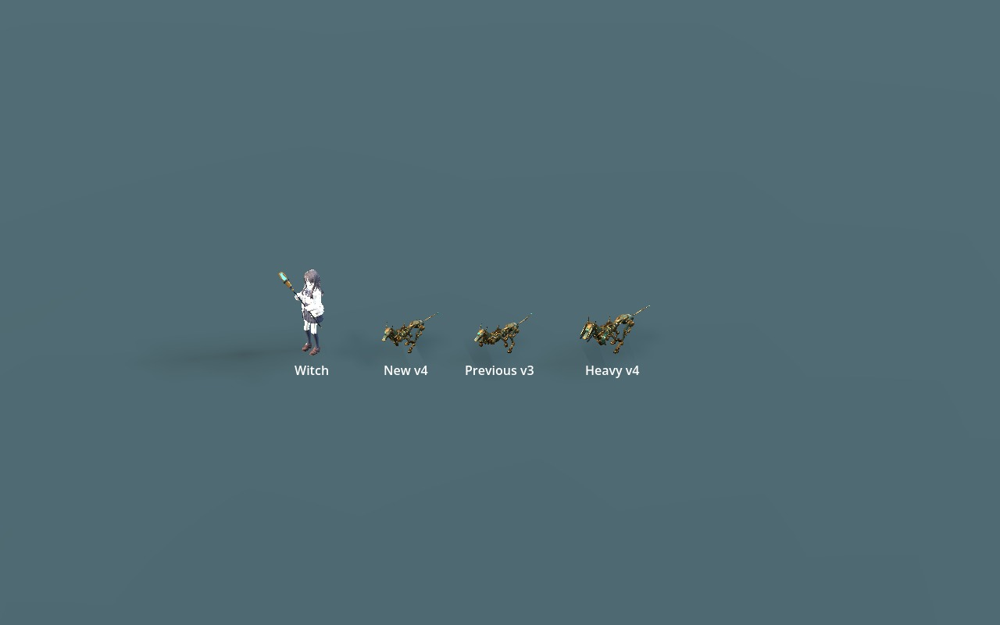
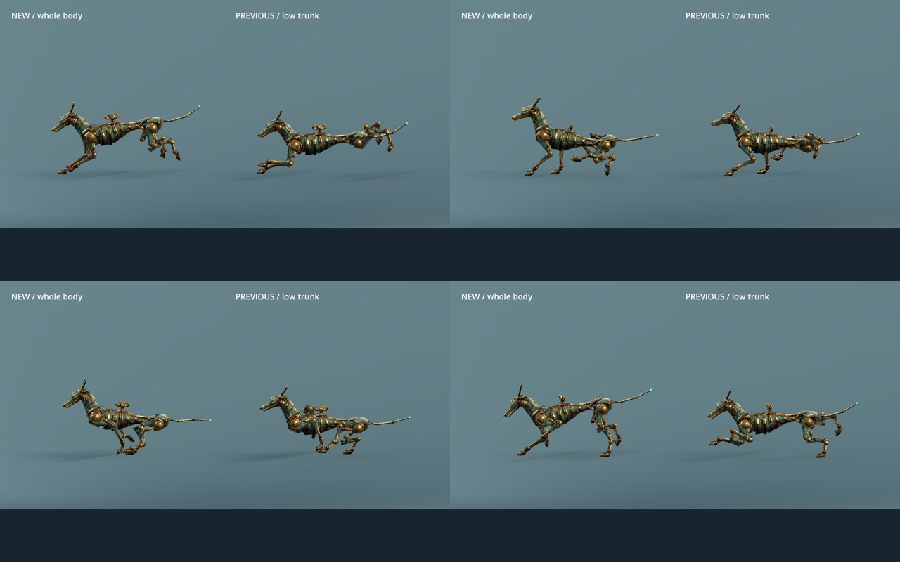

WITCH · AUTOMATION ART · V4
수렵견, 몸 전체가 함께 달리도록
몸통을 낮게 고정하던 보정을 걷어내고, 늑대 원본의 몸통·골반·목·머리·꼬리 움직임을 함께 적용했습니다. 다리 비율에 맞춰 앞다리 회수와 접지를 정리했습니다. 비교 화면 왼쪽이 새 v4, 오른쪽이 기존 v3입니다.
등 높이42.3–52.0cm기존 39.3–43.0cm
전신 동작몸통 + 골반 + 목 + 꼬리원본 회전량을 유지
관절과 발굽힘 방향 · 접지 수정팔꿈치가 등 아래로 회수됨
실제 표시 크기
1.75배 게임 카메라에서 마녀와 함께 배치했습니다. 중장 추적기는 새 전신 동작에 맞춰 장갑도 따라갑니다.

자세 비교

자산과 검증 기록
수렵견은 6,795 삼각형·33 강체 그룹·37 본을 유지합니다. 장갑은 1,388 삼각형·4 그룹입니다. 모든 본의 기본 자세, 일반 부품, 재질은 유지하고 앞 피스톤 케이스 2개의 정적 길이만 소폭 맞췄습니다.
새 보폭은 2.754772m / 0.5초 클립입니다. 6.5m/s 이동에는 1.179771배 재생을 사용합니다. 장갑과 몸체는 같은 시간을 샘플합니다. 게임 AI·이동 규칙은 변경하지 않은 준비용 자산입니다.
저장 원본·GLB 재임포트 QA 오류 0. 접지·관절·피스톤·루프와 실제 Godot 재생을 검사했습니다. UV/노멀 이음과 내부 맞댐 면 경고는 유지합니다. 임의 블렌드나 실시간 충돌까지 검증한 것은 아닙니다.


몸체 편집·연결 안내 · 장갑 안내 · 검증·파일 해시